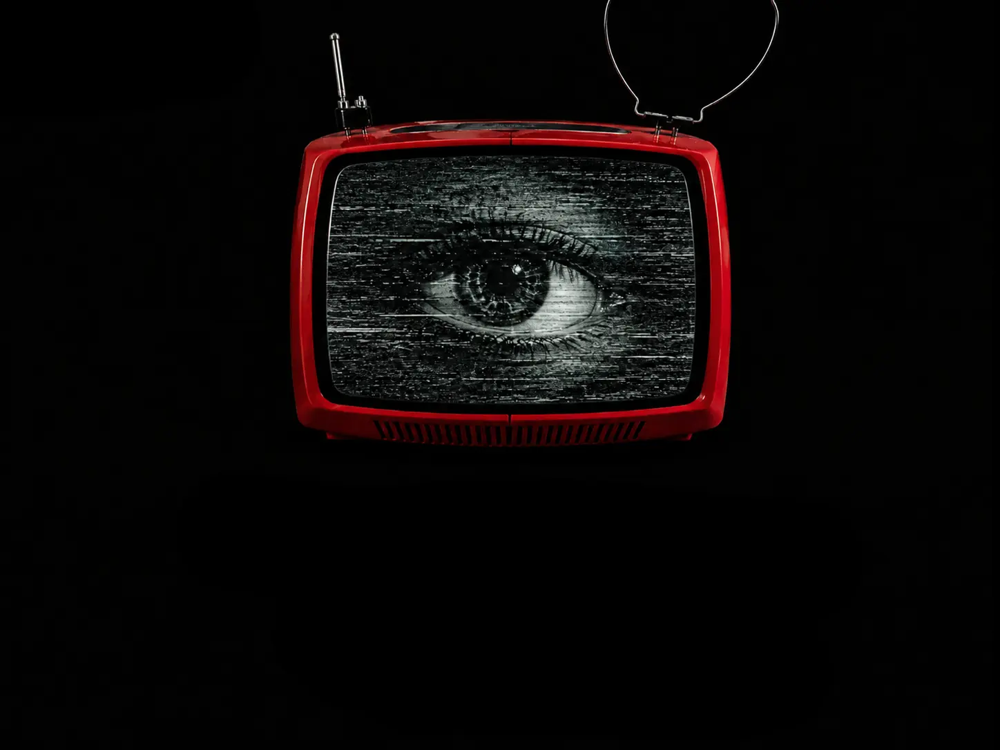

Cuando ya vi de qué hablaría en este nuevo trabajo, supe enseguida cuál sería su título: La casa del terror. Y esa casa no sería un lugar para asustarse, sino para entender de qué tenemos miedo.
La casa del terror no es un sitio físico, ni una atracción de feria. Es una manera de mirar la vida sin filtros, de entrar en lo que duele sin apagar la luz. En esa casa cabe todo: la enfermedad, la pérdida, la violencia, la memoria que se deshace, y también la música que intenta sostenerlo todo.
Para mí, este disco es eso: una forma de transformar el miedo en algo que pueda escucharse. Porque el miedo, cuando lo nombras, ya empieza a cambiar de forma. En mi casa del terror no hay monstruos, solo personas intentando no olvidar que todavía queda algo humano entre tanto ruido.
Muchas veces miramos hacia otro lado. A todos nos duele saber que en el mundo hay dolor, violencia, días grises o enfermedad. Pero a veces no nos queda otra que enfrentarnos directamente a la realidad, mirar de frente la parte más cruda de la vida.
Un día en que pensaba más en gris que en rosa —por suerte, normalmente suele ser al revés— imaginé una historia y la escribí.
El primer terror: la enfermedad. Una en concreto: perder la memoria, olvidar quién eres o quién fue la persona que tienes delante. Esa fragilidad me da miedo. Supongo que por eso terminé escribiendo Él lo olvida todo.
Ese texto no nació para hablar del Alzheimer, aunque acabó haciéndolo. Era más bien una forma de entender lo que pasa cuando alguien se borra poco a poco, cuando cada día es una primera vez que mañana ya no recordará. Hay algo aterrador y hermoso a la vez en eso: la posibilidad de empezar de nuevo, pero también la certeza de que todo se está deshaciendo.
A veces pienso que Él lo olvida todo no habla de una persona, sino del mundo. Un mundo que se olvida de lo que duele, de lo que ha hecho, de lo que prometió no repetir. Tal vez todos tengamos un poco de esa enfermedad, aunque la llamemos de otra manera.
Él lo olvida todo:
Cada día me pregunta quién soy, y cada día le respondo con una canción diferente. A veces le digo que soy un marciano; otras, una interferencia en la radio del tiempo. Él ríe, y durante unos segundos parece recordarlo todo.
Cuando me olvida, es como volver a empezar sin culpa, sin pasado, como si cada conversación fuera un universo nuevo donde aún no ha ocurrido nada.
Pero cuando calla, siento la pérdida. No tanto la suya, sino la mía: la de hablar con alguien que vive en el presente puro, mientras yo arrastro todas mis versiones anteriores, como cintas gastadas de VHS.
Lo encuentro cada noche. Le cuento que el mundo sigue ardiendo, que yo sigo tocando dentro de mi casa del terror, y que, a pesar de todo, todavía hay música.
Él me mira con ojos vacíos y tiernos. —No sé quién eres —me dice. Y yo le contesto, muy despacio, con una voz que ya no busca ser recordada, solo seguir sonando: —No importa. Mañana volveré a ser quien tú quieras.
A veces, para quitarle hierro al asunto, me imagino diciéndole a una persona con esta enfermedad: —¿Te acuerdas cuando te acordabas?
Y oye, no hay mal que por bien no venga: ya me gustaría a mí no recordar ninguna canción de Ramoncín, por ejemplo.
El segundo terror: la muerte.
Nos habíamos ido para descansar. Solo tres días, lejos del ruido, lejos de todo. Una casa pequeña, rodeada de árboles, con olor a madera y promesa de silencio. Por un momento creí que el mundo podía quedarse quieto.
...
Documento extraído de:
EL HOMBRE INVISIBLE
Carles Almansa
(transmisión humana detectada dentro de Cosmic Marciana)